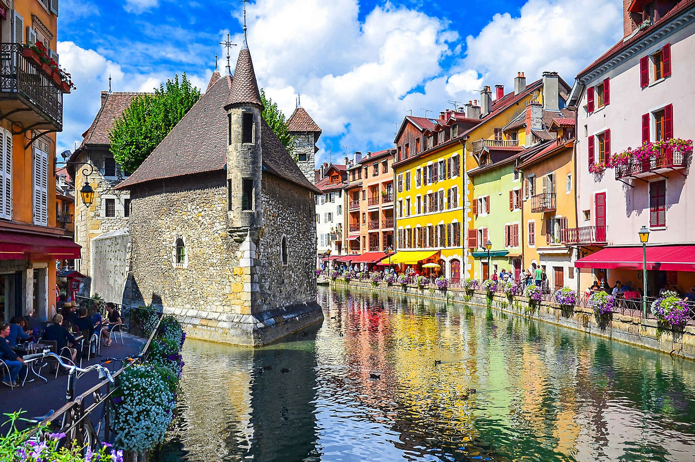
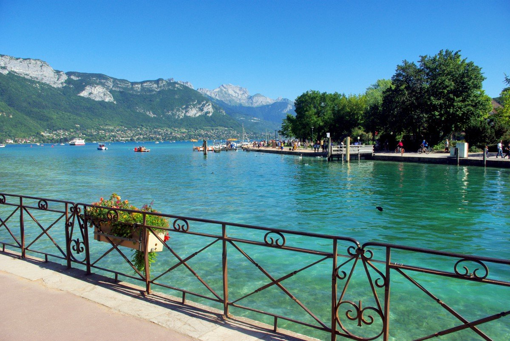
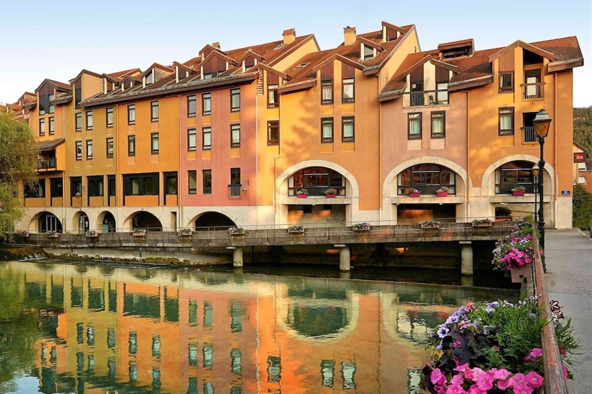
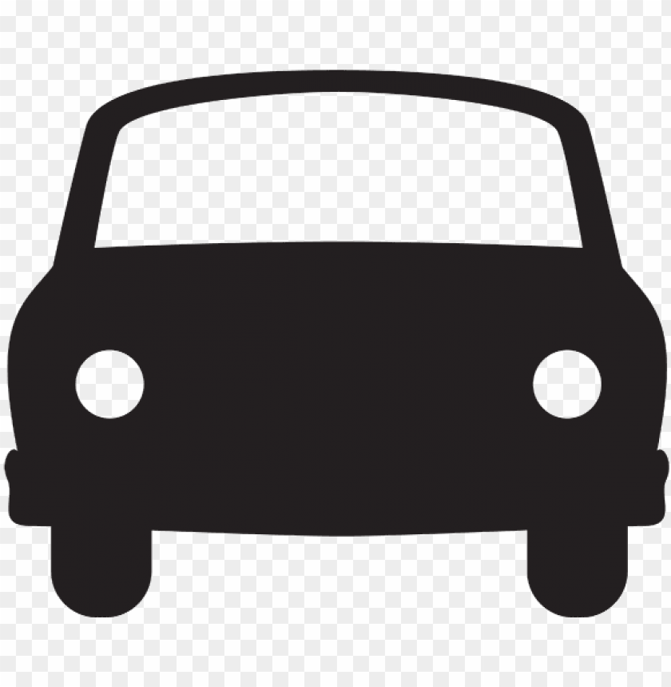

Välkommen till Annecy!
I denna alpstad 60 min från Geneve samsas klarblått vatten, vackra vyer och massor av kultur. Välkommen till "Alpernas lilla Venedig"

Genom staden rinner en å som rinner ut i sjön. I mitten av ån står ett gammalt fängelse som nu har blivit restaurang.

Här ser ni den berömt rena och klara sjön fint omringad av berg.

Färgglada byggnader och mängder av blomlådor är något man hittar överallt i Annecy.
Resealternativ
De tre enklaste sätten att resa till Annecy är vid flyg, tåg eller med bil. Nedan är en kort beskrivning till varje alternativ och även en länk till bokning.

Flyga
- ca 3 timmar
- Högt CO2-utsläpp
- Snabbt
- Smidigt
Åka med tåg
- ca 24 timmar
- Lågt CO2-utsläpp
- Smidigt
- Slippa göra något, bara åka med

Åka bil
- ca 23 timmar
- Högt CO2-utsläpp
- Stanna så ofta ni vill
- Vackra vyer